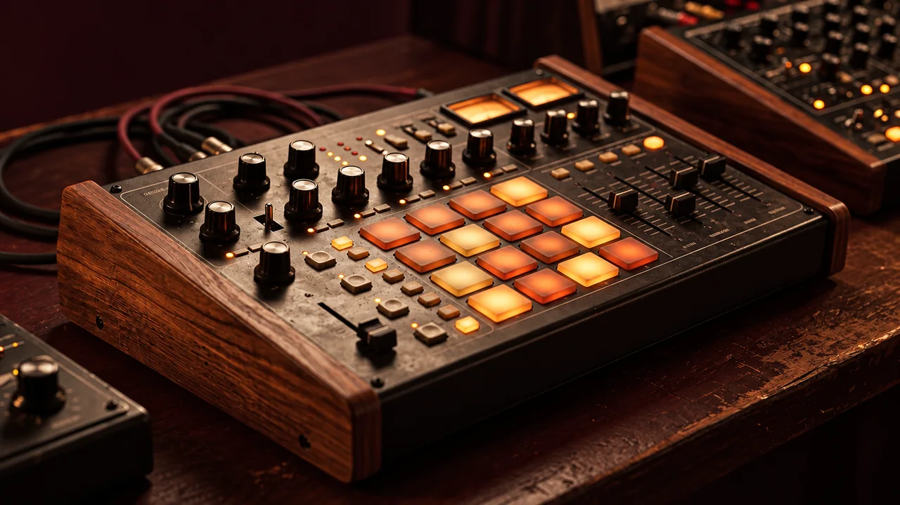

LABORATORIO RÍTMICO
Descubre el ritmo tocándolo.

Secuenciador de 16 pasos para experimentar con bombo, caja, sonido agudo y campana. Escucha patrones didácticos y crea tus variaciones.
Los ejemplos son esquemas educativos simplificados, no transcripciones definitivas de tradiciones musicales. Los sonidos son sintetizados.
Detenido
Aprende con el patrón
Escucha cada capa por separado, cambia los acentos y compara cómo varía el resultado. Después intenta reproducir el patrón con instrumentos acústicos.
Practicar teoría y ritmo ↗